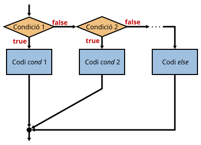

Si hi ha més de dos possibles blocs cal utilitzar aquesta estructura:

El codi equivalent seria:
if (codi == 1234) descompte = 10;
else if (codi == 5678) descompte = 5;
else descompte = 0;
O també:
if (codi == 1234)
descompte = 10;
else if (codi == 5678)
descompte = 5;
else
descompte = 0;
Es poden afegir tants else if (condicio) com sigui necessari.
No és imprescindible posar el bloc else, però si es posa, només pot haver-hi un i s'ha de posar al final.
Aquest bloc s'executarà si no es compleix cap de les condicions anteriors.
Com sempre, és molt recomanable posar les claus per indicar cada bloc:
if (codi == 1234) {
descompte = 10;
alert("S'aplicarà descompte PLUS");
} else if (codi == 5678) {
descompte = 5;
alert("S'aplicarà descompte");
} else {
descompte = 0;
alert("NO s'aplicarà descompte");
}
Encara que més d'una condició es compleixi, només s'executa un dels blocs:
if (nota <= 5)
// Bloc 1
else if (nota >= 5 && nota < 8)
// Bloc 2
else
// Bloc 3
Si la nota és 5, es compleix tant la condició 1 com la 2, però només s'executa la primera que és certa.
A més, què passa si la nota és inferior a 0 o superior a 10?
Sempre s'han d'evitar aquestes situacions fixant correctament els límits!
Si hi ha diferents rangs de valors contigus, la millor forma de determinar en quin rang es troba un valor és:
if (nota < 0)
// Bloc 1 (error: nota < 0)
else if (nota < 5)
// Bloc 1: entre 0 i 4.999999 (suspès)
else if (nota < 8)
// Bloc 2: entre 5 i 7.999999 (aprovat)
else if (nota <= 10)
// Bloc 3: entre 8 i 10 (excel·lent)
else
// Bloc 4 (error: nota > 10)
D'aquesta forma s'evita que pugui haver-hi solapament o rangs buits.
S'ha d'evitar la següent forma de codificar aquest tipus de condicions:
if (nota >= 0 && nota < 5)
// Bloc 1
if (nota >= 5 && nota < 8)
// Bloc 2
if (nota >= 8 && nota <= 10)
// Bloc 3
El codi és menys eficient i és més fàcil cometre errors.
També es poden aniuar condicions dins d'altres condicions i realitzar comparacions múltiples:
if (a > b) { // 1ª condició
if (b > c) { // 2ª condició
// Sentències que s'executaran si la 1ª condició és certa i la segona també
} else {
// Sentències que s'executaran si la 1ª condició és certa i la segona falsa
}
} else {
// Sentències que s'executaran si la 1ª condició és falsa
}
En alguns casos, un condicional niuat es pot simplificar fàcilment.
El següent codi...
if (x == 0) {
if (y == 0) {
alert("X i Y són zero");
}
}
... es pot substituir per:
if (x == 0 && y == 0) {
alert("X i Y són zero");
}